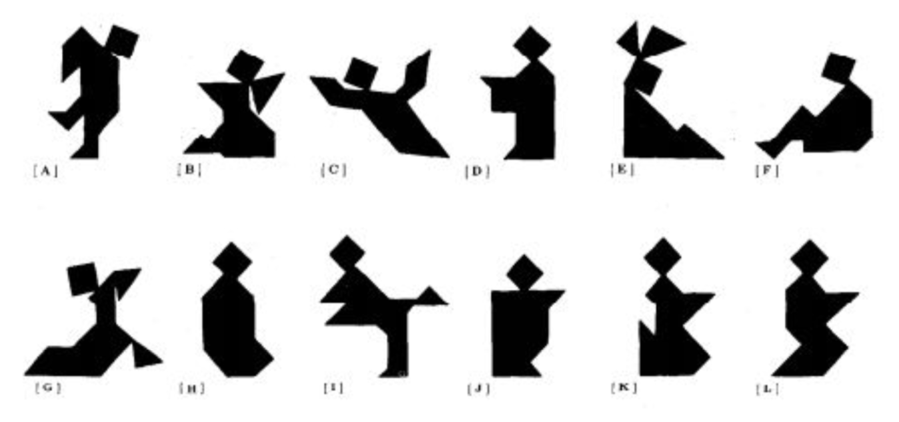
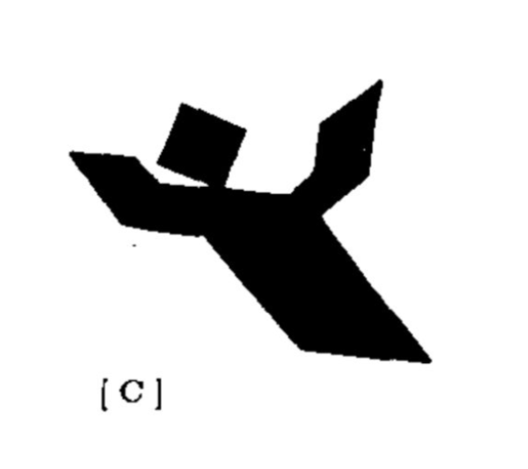
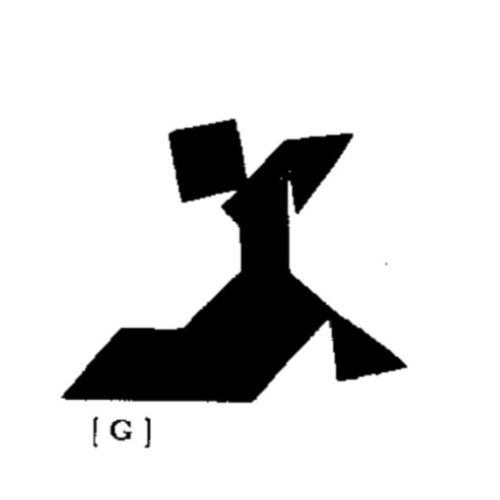
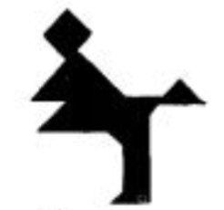

While working in Stanford's Computation and Cognition Lab, I researched how people conventionalize the names of unfamiliar objects.
The main focus of this project was to better understand how names are conventionalized through dialogue. A study by Clark & Wilkes-Gibbs (1986) offered a great experimental design for examinig this conventialization process. In their experiment they had a pair of participants play the roles of "matcher" and "director" and coordinate a grid of ambiguous tangram shapes, as shown below.
During the experiment, the "matcher" and "director" sat across a table from each other, seperated by an opaque screen. They each had a grid of tangram shapes like the one shown above, arranged in different orders. Their goal was to match the order of tangrams on their grid through verbal communication.
Each pair or participants played six rounds, where a round was considered completed when the pair believed that their boards matched.
Speech between participants was done in person, which captured natural communication very well but limited the amount of data that could be gathered.
In order to gather more data and thus perform more significant and detailed analyses, I set about digitalizing their experiment using a web development framework. This would enable me to collect data from many participants quickly and to easily analyze their dialogue with modern natural language processing tools.
I modified an existing code base used by the CoCo lab to study references. The overall Node.js framework remained the same but I added a chat panel and workspace where players could drag objects around and watch their partner do so in real time. The GitHub repository for the tangrams replication game can be accessed here and an example of the game in action is shown below.
I recruited twenty-four pairs of participants using Amazon's Mechanical Turk crowd-sourcing service. For each round of the game played, I collected a wide array of data including successful matches, text files of their dialogue, and time stamps for a variety of actions completed during the game.
The core of my analysis revolved around measuring how well the co-occurance of a given word used to describe a given tangram at the start of the game predicted the words that were consistently used to describe that tangram in the final round of the game, where the tangram's name could be considered conventionalized.
My first step working with the data involved hand-coding the tangram the utterances of the matcher and director referred to during each round of their game. After doing this, I measured the co-occurence value of a word by calculating its pointwise mutual information (PMI) value. To compute this, I counted the frequency that a given word x occured when speaking about tangram y and then counted the global frequency of the given word x used to describe all tangrams in that round.
My analysis revealed that words with high PMI values in round 1 are more likely to remain in round 6 than words chosen at random in round 1. This suggests that a word with a high co-occurance value in round 1 may be a core reason why that word sticks around and gets conventialized later on.
In order to keep track of what name went with each of the 12 tangrams, participants may have used the uniqueness of a word for a certain shape as a fast and low-cost way to coordinate on what tangram was being referenced.
Throughout all the data I gathered, pairs of participants had a wide variety of names that were conventialized for the same shapes. Two examples of this for tangram 'C' and 'G' are shown below.
Some examples of how participants described tangram C were 'angel', 'ghost', 'floating dude', 'singer', 'arms up', and 'falling person'.
Examples of descriptions for tangram G included 'seal', 'rock rolling into ditch', 'yoga person', weird one', and 'praying mantis'.
Examples like these provide evidence that a wide variety of phrases can be conventionalized. The co-occurance theory supports this, suggesting that while the terms conventionalized may be somewhat arbitrary across different groups, there are also patterns, such as co-occurance, which can consistently explain the conventionalization at work.
For a more thorough description of the work I did, you can view my thesis here. To view other work from the CoCo using this application, check out this paper.
